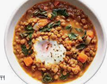

lentelstew

Description
A rich and hearty medley of vegetables, lentils, and herbs makes this
freezer-friendly Vegan Winter Lentil Stew the perfect cold-weather
comfort food.
Ingredients
- 2 Tbsp olive oil
- 1 yellow onion
- 4 cloves garlic
- 4 carrots (about 1/2 lb.)
- 4 stalks celery
- 2 lbs potatoes
- 1 cup brown lentils
- 1 tsp dried rosemary
Steps
- Dice the onion and mince the garlic. Add the olive oil, onion,
and garlic to a large soup pot and begin to sauté over medium heat.
- While the onion and garlic are sautéing, dice the celery, then add it
to the pot and continue to sauté. As the celery, onion, and garlic are sautéing,
peel and chop the carrots into half rounds.
Add the carrots to the pot and continue to sauté.
- As the onion, garlic, celery, and carrots are sautéing, peel and
cube the potatoes into 3/4 to 1-inch pieces.
Add the cubed potatoes to the pot along with the lentils,
rosemary, thyme, Dijon, soy sauce, brown sugar, and vegetable broth.
- Briefly stir the ingredients to combine, then place a lid on the pot,
turn the heat up to high, and bring the stew up to a boil.
Once it reaches a boil, turn the heat down to low and let it
simmer for 30 minutes, stirring occasionally
- Toward the end of the simmer time, when the potatoes are very soft,
begin to mash the potatoes a bit as you stir.
This will help thicken the stew.
- Finally, after 30 minutes, stir in the frozen peas and
allow them to heat through. Taste the stew and add salt if needed
(this will depend on the salt content of your broth, I did not add
any extra). Serve hot and enjoy!